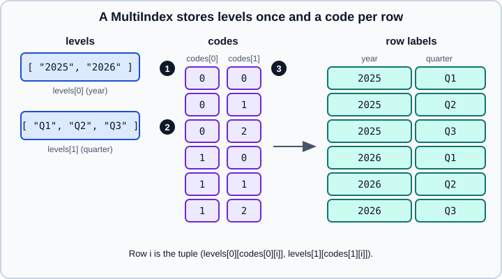

MultiIndex
|
This content was generated with the assistance of AI and should be verified against the official documentation before being relied on in production. |
A MultiIndex is an index with more than one level: each row (or column) is identified by a tuple such as ("2025", "Q2"). It lets a two-dimensional table hold data that really has more dimensions, such as sales by year and quarter, without a separate table per year. It is what groupby with several keys, pivot_table, stack and unstack produce, so you meet it even when you do not build one.
This page targets pandas 3.1 on Python 3.13 or 3.14 and was checked in October 2026. Every example was run with Python 3.13 and pandas 3.1.0, and the output shown is real. The basics of selection are in Indexing and Selecting, plain indexes are in Index Objects, and reshaping between long and wide layouts is in Pivot and Pivot Tables and Melt, Stack and Explode.
All examples use quarterly sales:
import numpy as np
import pandas as pd
idx = pd.IndexSlice
mi = pd.MultiIndex.from_product([["2025", "2026"], ["Q1", "Q2", "Q3"]], names=["year", "quarter"])
sales = pd.DataFrame(
{"revenue": [120, 135, 150, 160, 170, 190], "units": [12, 14, 15, 15, 17, 20]},
index=mi,
)
print(sales) revenue units
year quarter
2025 Q1 120 12
Q2 135 14
Q3 150 15
2026 Q1 160 15
Q2 170 17
Q3 190 20How a MultiIndex is stored
A MultiIndex does not store the tuples. It stores, for each level, the list of unique values (the levels), and for each row one small integer per level (the codes) that points into those lists. Repeated labels therefore cost one integer instead of one string.

Marker 1 is the year level and marker 2 the quarter level; each lists its unique values once. Marker 3 is the codes: the fourth row has codes 1 and 0, which pick "2026" from the first list and "Q1" from the second.
print(sales.index.names, sales.index.nlevels, sales.index.levshape)
print(sales.index.levels)
print(sales.index.codes)
print(sales.index.get_level_values("quarter"))
print(sales.index.dtypes)['year', 'quarter'] 2 (2, 3)
[['2025', '2026'], ['Q1', 'Q2', 'Q3']]
[[0, 0, 0, 1, 1, 1], [0, 1, 2, 0, 1, 2]]
Index(['Q1', 'Q2', 'Q3', 'Q1', 'Q2', 'Q3'], dtype='str', name='quarter')
year str
quarter str
dtype: objectSource: pandas API: pandas.MultiIndex
Each element of a MultiIndex, such as sales.index[0], is a plain Python tuple. Level names are optional but strongly recommended: they let you refer to levels by name instead of by number in xs, sort_index, groupby(level=...), unstack and reset_index.
Building a MultiIndex
There are several constructors; they all produce the same object:
a = pd.MultiIndex.from_arrays([["a", "a", "b"], [1, 2, 1]], names=["k", "n"])
b = pd.MultiIndex.from_tuples([("a", 1), ("a", 2), ("b", 1)], names=["k", "n"])
fr = pd.DataFrame({"k": ["a", "a", "b"], "n": [1, 2, 1], "v": [10, 20, 30]})
c = pd.MultiIndex.from_frame(fr[["k", "n"]])
print(a.equals(b), a.equals(c))
print(c)True True
MultiIndex([('a', 1),
('a', 2),
('b', 1)],
names=['k', 'n'])Source: pandas API: MultiIndex
-
from_productbuilds the Cartesian product of the iterables, which is howsaleswas made. -
from_arraystakes one list per level;from_tuplestakes the tuples;from_frametakes aDataFramewhose columns are the levels (and uses its column names). -
set_indexwith a list of columns turns existing columns into levels, andreset_indexdoes the reverse:
flat = sales.reset_index()
print(flat)
print(flat.set_index(["year", "quarter"]).equals(sales))
print(sales.reset_index(level="quarter")) year quarter revenue units
0 2025 Q1 120 12
1 2025 Q2 135 14
2 2025 Q3 150 15
3 2026 Q1 160 15
4 2026 Q2 170 17
5 2026 Q3 190 20
True
quarter revenue units
year
2025 Q1 120 12
2025 Q2 135 14
2025 Q3 150 15
2026 Q1 160 15
2026 Q2 170 17
2026 Q3 190 20A MultiIndex can contain missing values (nan in a level), but they make selection harder to reason about; fill or drop them before indexing.
Source: pandas API: MultiIndex
Selecting rows
With loc, a single label selects the first level and drops it from the result; a tuple selects across levels:
print(sales.loc["2025"])
print(sales.loc[("2025", "Q2")])
print(sales.loc[("2025", "Q2"), "revenue"]) revenue units
quarter
Q1 120 12
Q2 135 14
Q3 150 15
revenue 135
units 14
Name: (2025, Q2), dtype: int64
135Source: pandas user guide: Using slicers
A label that is not in the index raises KeyError, naming the missing label. Position-based iloc ignores levels altogether and treats the index as a flat sequence of rows.
Slices, lists and IndexSlice
To skip a level, use slice(None) for "everything" at that level. pd.IndexSlice is a helper whose bracket syntax builds those tuples with the familiar slice notation:
print(sales.loc[(slice(None), "Q1"), :])
print(sales.loc[idx[:, "Q1":"Q2"], "revenue"])
print(sales.loc[idx["2026", ["Q1", "Q3"]], :]) revenue units
year quarter
2025 Q1 120 12
2026 Q1 160 15
year quarter
2025 Q1 120
Q2 135
2026 Q1 160
Q2 170
Name: revenue, dtype: int64
revenue units
quarter
Q1 160 15
Q3 190 20Source: pandas user guide: Using slicers
Always give loc both the row and the column selector when you use a tuple of slices (here , :); without it the expression is ambiguous between selecting rows and columns.
xs: a cross-section at one level
xs selects the rows where one level has a given value, from any level, and by default drops that level from the result. drop_level=False keeps it:
print(sales.xs("Q2", level="quarter"))
print(sales.xs("Q2", level="quarter", drop_level=False))
print(sales.xs(("2026", "Q3"))) revenue units
year
2025 135 14
2026 170 17
revenue units
year quarter
2025 Q2 135 14
2026 Q2 170 17
revenue 190
units 20
Name: (2026, Q3), dtype: int64Source: pandas API: DataFrame.xs
Boolean masks over one level
Use get_level_values to build a mask from a level, then loc as usual:
q = sales.index.get_level_values("quarter")
print(sales.loc[q.isin(["Q1", "Q3"]) & (sales["revenue"] > 130)])
print(sales.index.get_loc(("2025", "Q2")), sales.index.get_loc("2026")) revenue units
year quarter
2025 Q3 150 15
2026 Q1 160 15
Q3 190 20
1 slice(np.int64(3), np.int64(6), None)get_loc returns an integer for a full key and a slice (or boolean mask) for a partial one, which is how loc locates rows internally.
Source: pandas user guide: Using slicers
Sorting: the lexsort requirement
Slicing on a MultiIndex needs the index to be sorted lexicographically, that is sorted by level 0, then level 1 inside each group of equal level-0 values. A shuffled index raises UnsortedIndexError for slices:
shuf = sales.sample(frac=1, random_state=3)
print(shuf.index.is_monotonic_increasing)
for f in (
lambda: shuf.loc[idx["2025":"2026", "Q1"], :],
lambda: shuf.loc["2025":"2026"],
):
try:
f()
except Exception as e:
print(type(e).__name__, "|", e)
print(shuf.sort_index().index.is_monotonic_increasing)False
UnsortedIndexError | 'MultiIndex slicing requires the index to be lexsorted: slicing on levels [0], lexsort depth 0'
UnsortedIndexError | 'Key length (1) was greater than MultiIndex lexsort depth (0)'
TrueSource: pandas API: DataFrame.sort_index
The fix is sort_index(). It can also sort by one level, or by several with different directions:
print(shuf.sort_index(level="quarter"))
print(shuf.sort_index(level=["quarter", "year"], ascending=[True, False]).head(3)) revenue units
year quarter
2025 Q1 120 12
2026 Q1 160 15
2025 Q2 135 14
2026 Q2 170 17
2025 Q3 150 15
2026 Q3 190 20
revenue units
year quarter
2026 Q1 160 15
2025 Q1 120 12
2026 Q2 170 17Source: pandas API: DataFrame.sort_index
Changing the level structure
| Method | Effect |
|---|---|
|
Exchanges two levels (default the last two); the data are not re-sorted |
|
Sets any order, by number or name |
|
Removes a level, keeping the other labels (which may then repeat) |
|
Moves a level back to a column |
|
Rename the level names, or the labels in one level |
|
Replace the label lists, or drop labels that no row uses |
print(sales.swaplevel().sort_index().head(3))
print(sales.reorder_levels(["quarter", "year"]).sort_index().head(2))
print(sales.droplevel("year").index)
print(sales.rename_axis(index=["y", "q"]).index.names)
print(sales.rename(index={"Q1": "first"}, level="quarter").index.get_level_values(1).unique().tolist()) revenue units
quarter year
Q1 2025 120 12
2026 160 15
Q2 2025 135 14
revenue units
quarter year
Q1 2025 120 12
2026 160 15
Index(['Q1', 'Q2', 'Q3', 'Q1', 'Q2', 'Q3'], dtype='str', name='quarter')
['y', 'q']
['first', 'Q2', 'Q3']Source: pandas API: DataFrame.swaplevel
After swaplevel or reorder_levels call sort_index before slicing, because the old sort order no longer holds.
Unused levels
Selecting a subset keeps all the labels of the original levels, even those no row uses. They show up in index.levels and in groupby with categorical keys, and are a common source of "ghost" groups:
sub = sales.loc[idx[:, "Q1"], :]
print(sub.index.levels)
print(sub.index.remove_unused_levels().levels)[['2025', '2026'], ['Q1', 'Q2', 'Q3']]
[['2025', '2026'], ['Q1']]MultiIndex columns
The columns of a DataFrame can be a MultiIndex too, for example one block of measures per region. Indexing by the top-level label returns a DataFrame of the sub-columns, and a tuple returns a Series:
cols = pd.MultiIndex.from_product([["revenue", "units"], ["EU", "US"]], names=["metric", "region"])
wide = pd.DataFrame(np.arange(8).reshape(2, 4), index=["2025", "2026"], columns=cols)
print(wide)
print(wide["revenue"])
print(wide[("revenue", "EU")])
print(wide.loc[:, idx[:, "US"]])
print(wide.xs("EU", axis=1, level="region"))metric revenue units
region EU US EU US
2025 0 1 2 3
2026 4 5 6 7
region EU US
2025 0 1
2026 4 5
2025 0
2026 4
Name: (revenue, EU), dtype: int64
metric revenue units
region US US
2025 1 3
2026 5 7
metric revenue units
2025 0 2
2026 4 6Source: pandas API: DataFrame.stack
select in pandas 3.1 understands MultiIndex columns too (see pd.col, select and filter). Moving a level between rows and columns is the job of stack and unstack:
print(sales.unstack("quarter"))
print(sales["revenue"].unstack("year"))
print(wide.stack("region")) revenue units
quarter Q1 Q2 Q3 Q1 Q2 Q3
year
2025 120 135 150 12 14 15
2026 160 170 190 15 17 20
year 2025 2026
quarter
Q1 120 160
Q2 135 170
Q3 150 190
metric revenue units
region
2025 EU 0 2
US 1 3
2026 EU 4 6
US 5 7Source: pandas API: DataFrame.stack
unstack moves an index level to the columns and creates NaN where a combination is missing; stack does the reverse. Details of their pandas 3 behaviour are in Melt, Stack and Explode.
Flattening columns
Many tools cannot take tuple column names. Join the parts into single strings:
fl = wide.copy()
fl.columns = ["_".join(c) for c in fl.columns.to_flat_index()]
print(fl.columns.tolist())
print(wide.droplevel("metric", axis=1).columns.tolist())['revenue_EU', 'revenue_US', 'units_EU', 'units_US']
['EU', 'US', 'EU', 'US']Source: pandas API: DataFrame.stack
Aggregating and aligning by level
Reduce over one level with groupby(level=...). The level= argument of reductions such as sum(level=0) was removed in pandas 2.0 and now raises TypeError:
print(sales.groupby(level="year").sum())
print(sales.groupby("quarter").mean())
try:
sales.sum(level=0)
except TypeError as e:
print("TypeError |", e) revenue units
year
2025 405 41
2026 520 52
revenue units
quarter
Q1 140.0 13.5
Q2 152.5 15.5
Q3 170.0 17.5
TypeError | sum() got an unexpected keyword argument 'level'Source: pandas API: DataFrame.groupby
A level name works as a grouping key without level=. For the full treatment of grouping see Group By: Split-Apply-Combine.
Arithmetic between a MultiIndexed object and one that has only one of its levels can broadcast over the missing levels with level=:
s = pd.Series([1.0, 2.0], index=pd.Index(["2025", "2026"], name="year"))
print(sales["revenue"].div(s, level="year"))year quarter
2025 Q1 120.0
Q2 135.0
Q3 150.0
2026 Q1 80.0
Q2 85.0
Q3 95.0
dtype: float64Source: pandas API: DataFrame.div
Setting, enlarging and reindexing
Assignment follows the same rules as for a flat index. A full tuple that does not exist adds a row; a missing label in reindex becomes a row of NaN:
t = sales.copy()
t.loc[("2026", "Q3"), "revenue"] = 999
t.loc[idx[:, "Q1"], "units"] = 0
t.loc[("2027", "Q1"), :] = [1, 2]
print(t.tail(3))
print(sales.reindex([("2025", "Q1"), ("2027", "Q1")])) revenue units
year quarter
2026 Q2 170 17
Q3 999 20
2027 Q1 1 2
revenue units
year quarter
2025 Q1 120.0 12.0
2027 Q1 NaN NaNSource: pandas API: DataFrame.loc
Set operations are available on a MultiIndex, with matching level names:
new = pd.MultiIndex.from_tuples([("2027", "Q1")], names=["year", "quarter"])
print(mi.append(new).tolist()[-2:])
print(mi.union(new).tolist()[-2:])
print(mi.isin([("2025", "Q1")]))
print(mi.to_frame(index=False).head(2))[('2026', 'Q3'), ('2027', 'Q1')]
[('2026', 'Q3'), ('2027', 'Q1')]
[ True False False False False False]
year quarter
0 2025 Q1
1 2025 Q2When to use a MultiIndex, and when not to
A MultiIndex is convenient for labelling the output of groupby and pivot_table, for fast lookups on several keys, and for unstack. It makes everything else harder: selection syntax is longer, there is a lexsort requirement, joins and concat need matching level names, and many methods return surprising level orders.
For data you will filter, join and model, a flat table with ordinary columns is usually clearer: keep year and quarter as columns, filter with a mask or query, and call set_index only at the end for display or for unstack. reset_index() after an aggregation gives you that flat table back.
Older advice that no longer applies
| Older tutorial says | Today |
|---|---|
|
The |
|
|
|
Not present in 3.1; use |
References
-
pandas user guide, MultiIndex and advanced indexing: https://pandas.pydata.org/docs/user_guide/advanced.html
-
pandas.MultiIndex: https://pandas.pydata.org/docs/reference/api/pandas.MultiIndex.html -
pandas.IndexSlice: https://pandas.pydata.org/docs/reference/api/pandas.IndexSlice.html -
DataFrame.xs: https://pandas.pydata.org/docs/reference/api/pandas.DataFrame.xs.html -
DataFrame.sort_index: https://pandas.pydata.org/docs/reference/api/pandas.DataFrame.sort_index.html -
DataFrame.unstack: https://pandas.pydata.org/docs/reference/api/pandas.DataFrame.unstack.html -
pandas 3.0.0 release notes: https://pandas.pydata.org/docs/whatsnew/v3.0.0.html